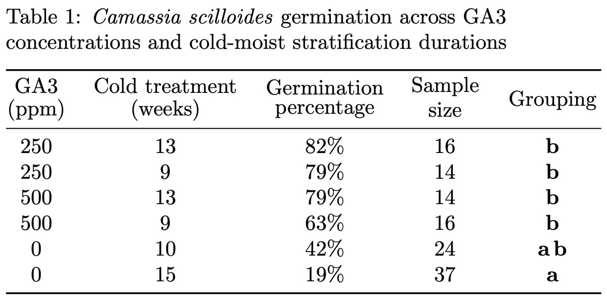
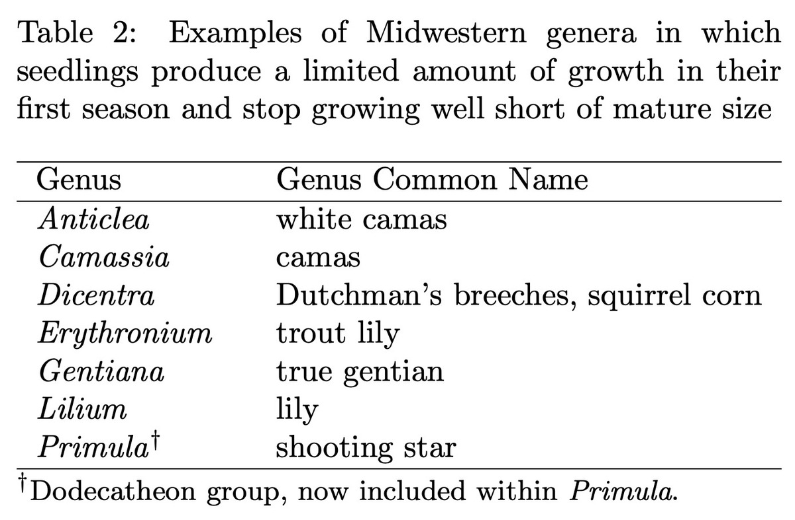

Practical Seed Ecology
Many of the Midwest’s most beautiful native plants are notoriously difficult to grow from seed. Their seeds carry complex dormancies that vex even experienced gardeners, and after germination, many refuse to thrive when grown in containers. Practical Seed Ecology is where I treat these problems as experiments: designing controlled trials, measuring germination outcomes, and reporting the results honestly (and with rigorous statistical testing).
What sets the project apart from most gardening writing is its quantitative rigor. Rather than passing along folk wisdom, I run side-by-side comparisons of treatments, hold variables constant where I can, track sample sizes and germination percentages, and let the data decide which protocol wins.

The experimental approach
Each propagation guide is built on measured results, not intuition. A few examples of the methods I use:
- Controlled treatment comparisons. For wood betony (Pedicularis canadensis), I split a single seed lot and ran two stratification regimes head-to-head—219 seeds through six months of cold–moist stratification against an alternative protocol—so the only thing that differed was the treatment.
- Quantified germination percentages. Outcomes are reported as percentages against known sample sizes: ~90% germination for prairie lily after nine weeks of cold stratification; 0% germination from four-month-old wood betony seed, isolating seed freshness as the decisive variable.
- Factor isolation. Posts test one variable at a time—stratification duration, germination temperature regime (e.g., 20/10 °C vs. 15/6 °C), light requirement, and seed age—so effects can be attributed rather than guessed at.
- Survival tracking. Beyond germination, I follow cohorts through transplanting and dormancy, recording outcomes like the 0% survival of undersized plugs planted out too early.
- Data tables and figures. Results are laid out in tables and growth-curve figures so readers can see the evidence and reproduce the protocol.
The writing aims to be genuinely useful to serious growers—precise enough to replicate—while staying readable for anyone curious about how a prairie gets rebuilt one seedling at a time.
Why it matters
Restoration depends on people being able to actually produce these plants, and much of the practical know-how lives in scattered personal experience rather than accessible writing. By testing protocols carefully and publishing them clearly—failures included—the project turns hard-won propagation knowledge into something others can build on. It’s also where my science communication is most personal: patient, experimental, and rooted in the plants themselves.
